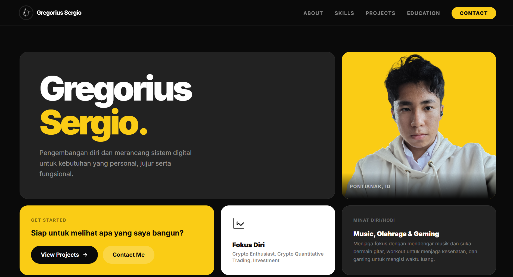
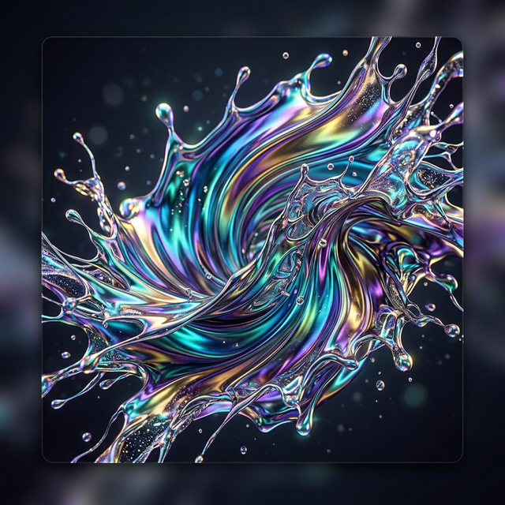

Kolaborasi ekstensif antara AI dan desain intuitif untuk meracik UI/UX tanpa bergantung pada framework besar, mengedepankan efisiensi dan estetika murni.

Portofolio ini dibangun dengan kesederhanaan melalui implementasi kode murni tanpa framework berlebih.
Desain yang simple dengan efisiensi kode maksimal.
Optimasi asset untuk pengalaman navigasi tanpa jeda (Zero Latency).
Rendering cepat, desain simple,dan layout yang rapi.
Skema warna kontras tinggi yang profesional, tajam, dan dikurasi secara manual untuk kejelasan.
Meminimalisir payload untuk pengalaman instan di semua perangkat.
Struktur hierarki modern menggunakan CSS Grid untuk penyajian konten yang terorganisir.
Navigasi mulus dengan custom scroll behavior dan state management sederhana.

Tertarik untuk membangun relasi atau berkolaborasi? Hubungi saya melalui media sosial